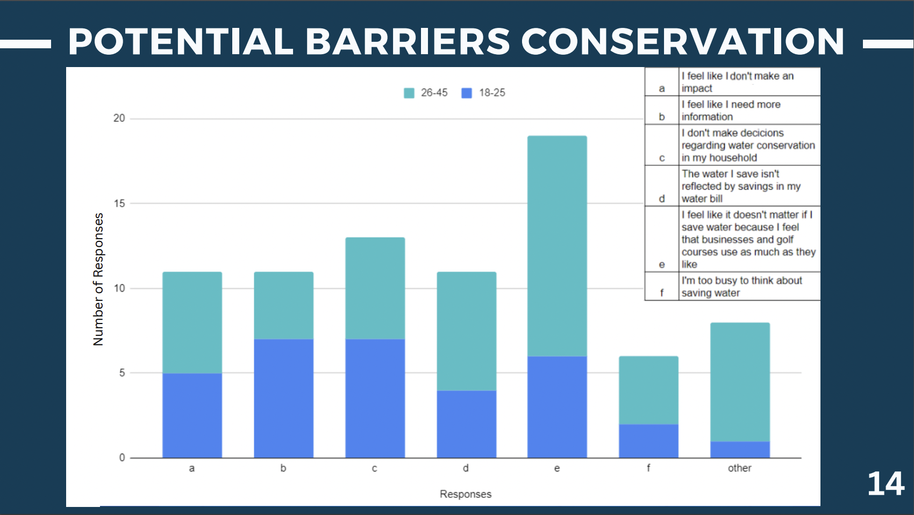

-
 Finance Bench: A New Benchmark for Financial Question Answering using LLMs
Finance Bench: A New Benchmark for Financial Question Answering using LLMs
Project analyzing which Large Language Model (LLM) performs best to analyze financial data and answer questions.
-
 R Shiny Application
R Shiny Application
This project uses machine learning to predict the risk of cardiovascular disease based on health indicators like age, BMI, cholesterol, and blood pressure. Key steps include data preprocessing, feature engineering (e.g., BMI and age groups), and applying models like Random Forest for classification. The app is deployed using Shiny for interactive predictions and analysis.
-
Uber Business Analysis
Project analyzing extensive Uber dataset to find business solutions to optimize profit.
-

Interactive Qualifying Project at the Honolulu Board of Water Supply
Junior year IQP Project in Honolulu, Hawaii, with the Board of Water Supply to collaborate in a group of four, analyze data, raise awareness about the environmental and freshwater challenges of the Red Hill Crisis, and create new means of communication to reach residents.
-
 Developing a Database for Competitor Data Analysis
Developing a Database for Competitor Data Analysis
A Tableau dashboard for competitor analysis as part of an MQP project.
-
 First HTML Project
First HTML Project
Attempt to create an interactive visualization using D3 with at least two linked views, where interactions in one view update the other, using a Kaggle dataset.
-
 Developing a Database for Company Data Analysis
Developing a Database for Company Data Analysis
A Tableau dashboard summarizing key findings and data visualizations for Hardware Tool Company for MQP research.
-
 Business Intelligence: Vending Machine Analytics
Business Intelligence: Vending Machine Analytics
Campus vending machine analysis using Tableau.